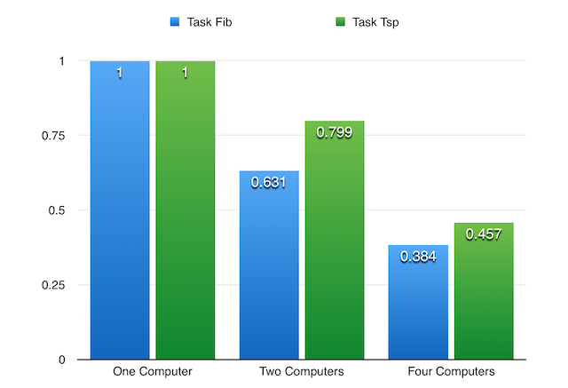
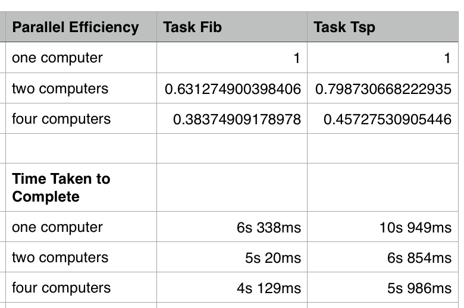
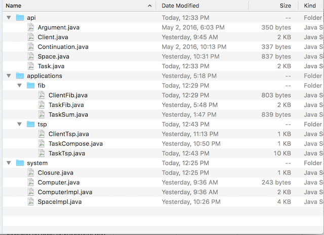

The following is the time taken for each task, and the graph for efficiency.
 The following is the class structure of the whole system, indicated by the file structures.

Design issues: 1. What functions does the client need to implement in order to get the system work? 2. How the tasks are handled throughout the whole procedure? 3. How fault tolerance is achieved?
1. The client needs to have three(maybe two is fine) classes in order to get it work: implement the tasks that will spawn other tasks, the tasks that will compose, and a client with main in it. More specifically, the tasks that will spawn need to implement four methods from the Task abstract class: spawn(), spawnNext(), generateArgument(), and needToCompute(). The call() method is already been implemented and will work correctly if you implement the above methods right. The task that composes only need to implement generateArgument().
2. The client sends an initial task to the space. The space has containers for ready tasks and waiting tasks. There is a wrapper on top of the task called closure used to deal with the waiting tasks cases. Computers will take tasks from the ready container; the space will help unwrap the closure back to task and give it to the computers. When a result is sent to space, the space will find which waiting task is waiting for this result. The space will get the task(closure) that is waiting from the container(map), and add the result to the corresponding argument. If the task is ready to go, the space will just put it in the ready queue and remove it from the map.
3. Basically if the computer proxy inside the space gets a remote exception when it executes the task, it will just put the task back to the ready queue.